Maguro 도움말
버전 0.2.3 · Windows · 이 사이트의 테마는 라이트
개요
Maguro는 Windows용 다중 패널 파일 관리자입니다. 각 패널은 진짜 탐색기 보기입니다. 우클릭 메뉴, 끌어서 놓기, 썸네일, Windows 복사 대화 상자가 그대로입니다.
새로 설치하면 패널 하나로 열립니다. 다른 프로그램 없이 복사하거나, 이동하거나, 비교해야 할 때 패널을 더합니다. 4×4 격자에 최대 16개입니다.
Maguro는 efww의 efww/grids 포크입니다. exe 이름(maguro.exe), 창 클래스, 설정 폴더, 단축키(Win+Shift+E)는 자체 것입니다.
시작 메뉴나 명령줄에서 시작합니다. maguro.exe C:\Work D:\Archive는 그 폴더를 엽니다. .maguro 파일은 저장한 세션을 엽니다. .grids, .qdr, grids.ini는 세션 파일이 아니며 가져오지 않습니다.
F1은 브라우저에서 이 도움말을 엽니다. Ctrl+/는 앱 안의 짧은 단축키 목록을 엽니다. Ctrl+,는 설정을 엽니다.
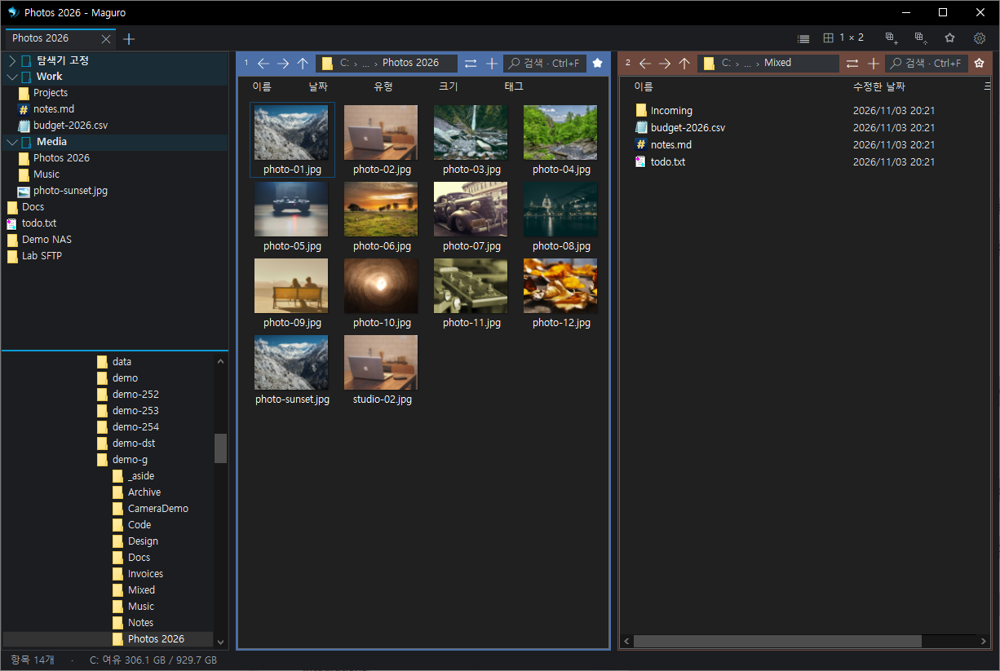
주소창과 도구 모음
키는 단축키에 한 번만 적습니다.
주소창은 현재 폴더입니다. 경로의 한 부분을 누르면 그곳으로 갑니다. 갈매기를 누르면 그 안의 폴더가 나열됩니다. 현재 폴더나 주소창의 빈 곳을 누르거나, 주소창 단축키(Ctrl+L, Alt+D, F4)로 경로를 입력합니다.
도구 모음에는 레이아웃, 저장, 세션 열기, 즐겨찾기가 있습니다. 드라이브 문자는 탭 줄에 둘 수 있습니다. 창이 좁으면 뒤쪽 문자부터 숨깁니다. 설정 → 모양에서 도구 모음, 드라이브 버튼, 상태 표시줄을 숨길 수 있습니다.
상태 표시줄은 선택한 항목 수와 남은 공간을 보여 줍니다.
⇄ 단추는 선택한 폴더(없으면 현재 폴더)를 다른 패널에서 열고, 이 패널의 열, 정렬, 보기를 유지합니다. 파일이 선택되어 있으면 그곳으로 복사하거나 이동하며, 최대 10,000개입니다. 패널이 하나면 좌우로 나눕니다. 선택이 없거나, 폴더 없이 파일만 선택된 경우에는 현재 폴더를 복제하고 그 파일은 복사하지 않습니다.
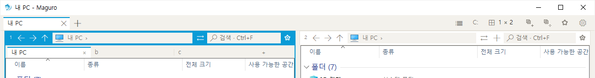
레이아웃과 패널
키는 단축키에 한 번만 적습니다.
패널은 폴더 하나입니다. 레이아웃을 누르면 균등한 격자가 됩니다. 그 선택 창에서 누른 채 끌면 열마다 행 수를 정합니다. 방향키와 Enter도 됩니다.
구분선을 끌어 크기를 바꿉니다. 구분선을 두 번 클릭하면 균등하게 나뉩니다. 한도는 열 4개, 한 열에 행 4개, 패널 16개입니다. 놓을 곳의 미리보기가 빨간색이면, 그 레이아웃이 한도를 넘는다는 뜻입니다.
Ctrl+Shift+M이나 패널 머리글을 두 번 클릭하면 그 패널이 커집니다. 다시 하면 복원됩니다.
설정 → 일반 → 기본 레이아웃은 새 탭, 새 창, 첫 실행의 레이아웃입니다. 새로 설치하면 패널 하나입니다. 레이아웃을 한 번도 저장하지 않은 예전 maguro.json은 여전히 좌우 패널 두 개로 열립니다. 다른 실행이 넘겨 준 경로는 여전히 패널 하나인 탭으로 열립니다. 저장한 .maguro 파일은 그 파일에 저장된 레이아웃을 유지합니다.
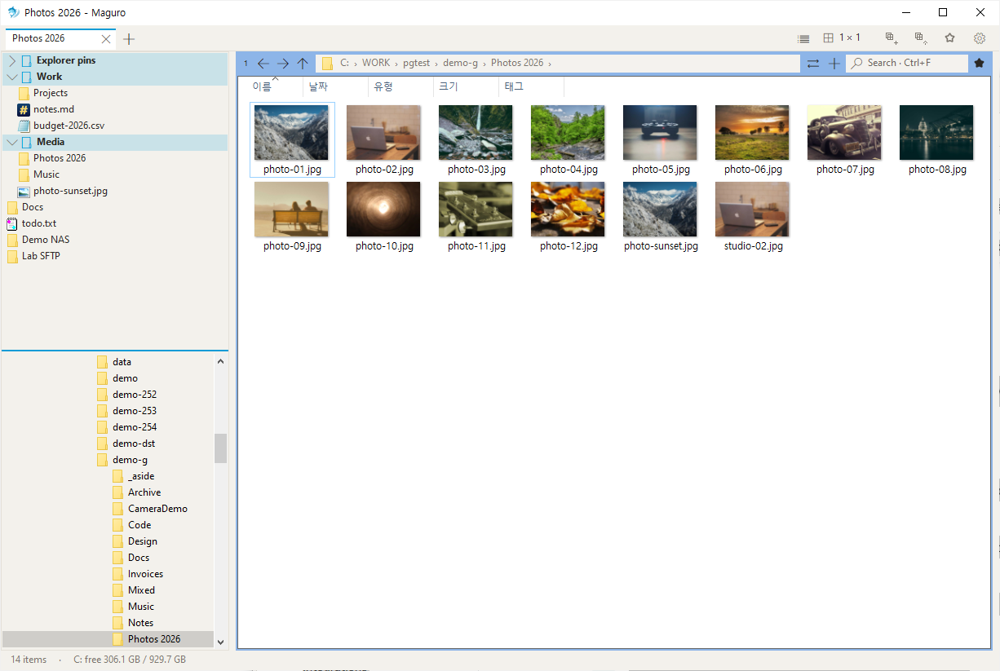
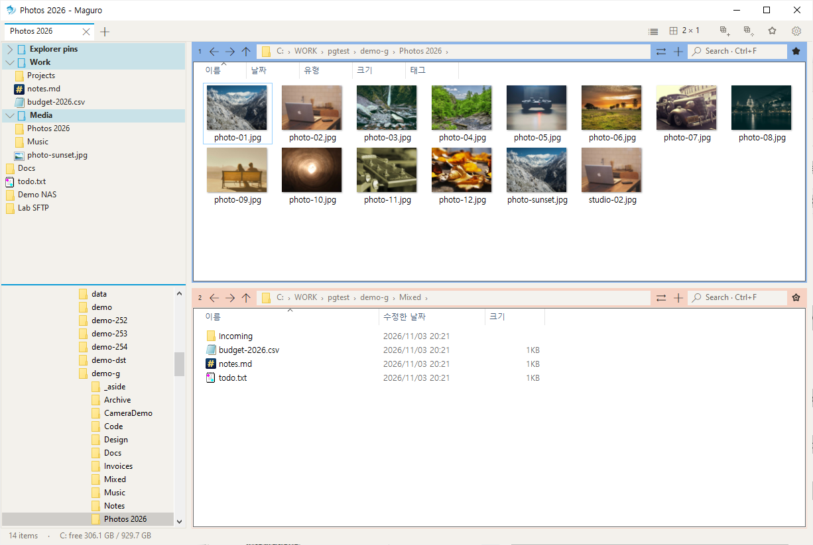
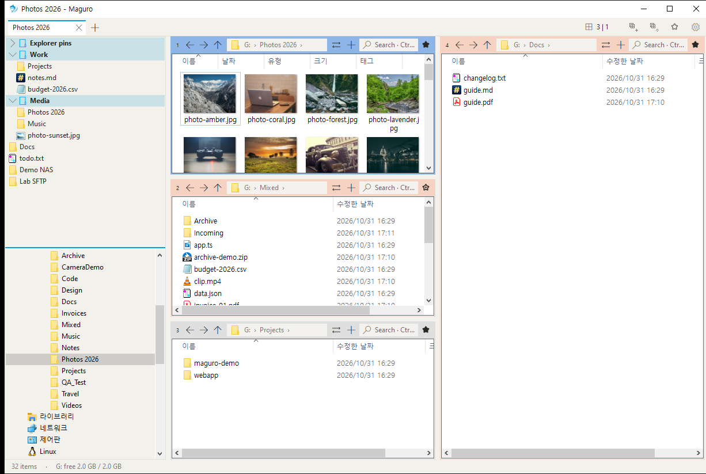
패널 이동과 복제
번호 배지나 머리글을 끌어 패널을 옮깁니다.
가장자리에 놓으면 대상 패널이 나뉩니다. 가운데에 놓으면 자리가 바뀝니다. Ctrl을 누른 채 끌면 현재 패널 탭을 복사합니다. 이때 가장자리에 놓으면 이 패널은 남긴 채 나누고, 가운데에 놓으면 그 칸에 패널 탭을 추가합니다. Ctrl을 놓으면 복사가 아니라 이동합니다.
같은 동작이 키보드에도 있습니다. Alt+Shift+방향키는 포커스를 이웃 패널로 옮기고, Ctrl+Alt+Shift+방향키는 그 이웃 패널과 자리를 바꿉니다.
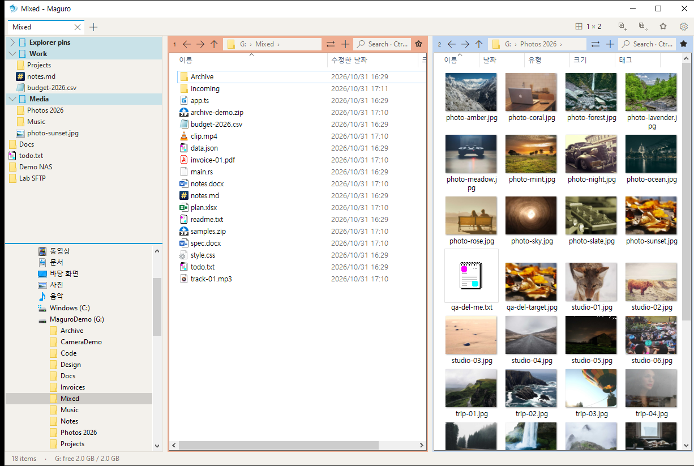
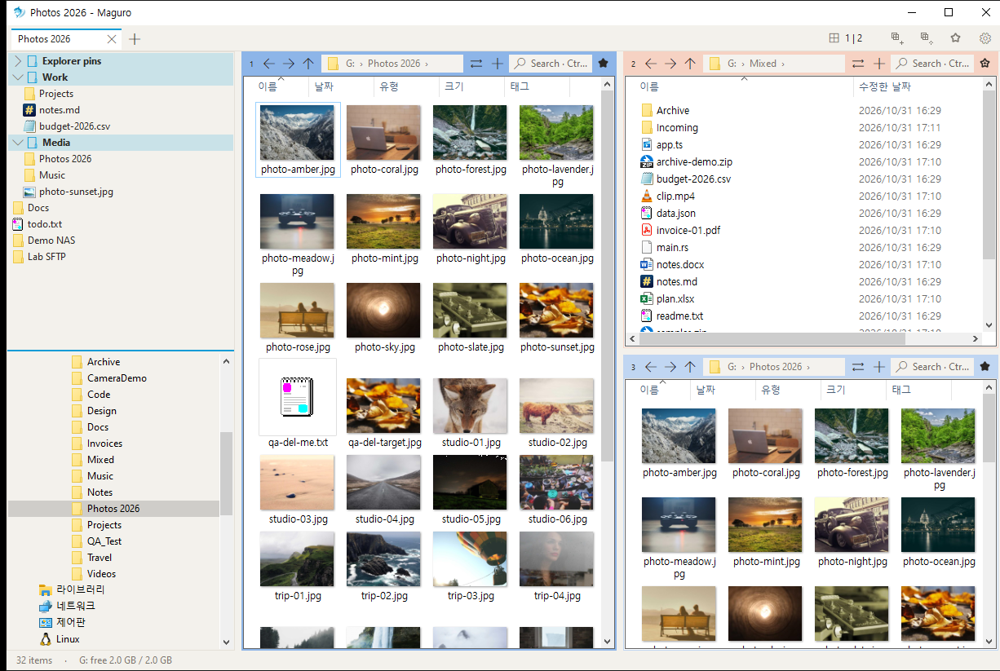
창 탭과 세션
키는 단축키에 한 번만 적습니다.
창 탭은 레이아웃 전체를 담습니다. 패널, 폴더, 보기, 열, 필터, 잠금, 색 라벨입니다. 탭 이름은 직접 바꾸기 전까지 활성 폴더를 따릅니다. 탭을 우클릭하면 이름 바꾸기, 잠금, 복제, 새 창으로 이동, 저장, 색 지정, 탭 목록을 열 수 있습니다. 잠긴 탭은 다른 탭을 닫거나 모든 탭을 닫아도 유지됩니다.
Ctrl+T는 새 탭을 엽니다. Ctrl+W는 현재 탭을 닫습니다. Ctrl+Shift+T는 닫은 탭을 다시 엽니다. Ctrl+Alt+K는 탭을 복제합니다. Ctrl+Tab과 Ctrl+Shift+Tab은 탭 사이를 이동합니다.
저장(Ctrl+S)은 이 탭을 기록합니다. 한 번도 저장하지 않은 탭은 이름을 묻습니다. 저장 단추의 초록 점은 이 탭의 레이아웃이 저장되지 않았다는 뜻입니다. 일반적인 파일 복사는 그 점을 켜지 않습니다. 설정 → 세션에서 점을 끌 수 있고, 종료할 때 세션을 저장하게 할 수도 있습니다. 종료할 때 저장이 기록되려면 창의 닫기 단추로 닫습니다.
세션 열기는 저장한 탭을 현재 탭 옆에 엽니다. 세션 파일을 여러 개 열면 각각 자기 탭으로 열립니다.
이름 있는 세션은 .maguro 파일뿐입니다. 설정 파일 옆의 maguro-sessions에 있습니다(%APPDATA%\Maguro\maguro-sessions, 포터블 모드에서는 exe 옆). 파일에는 레이아웃, 패널 경로, 보기, 열, 색조, 패널 탭, 창 탭이 들어갑니다. 즐겨찾기, 파일 바구니, 우클릭 메뉴 선택은 저장하지 않습니다. 그것들은 maguro.json에 남습니다.
Maguro는 .grids, .qdr, grids.ini를 가져오지 않습니다. 명령줄에 old.qdr을 넘겨도 세션은 열리지 않습니다. 설정 → 고급에서는 Maguro의 maguro.json이나 Maguro 자신의 예전 ini 텍스트를 가져올 수 있습니다. 그 ini는 Maguro의 것이며 grids 파일이 아닙니다.
단일 창 모드가 꺼져 있으면 Ctrl+N이 다른 창을 엽니다. 새로 설치하면 이 모드가 켜져 있습니다. 이후의 실행, Ctrl+N, 탭 줄 밖으로 탭을 끌기, 새 창으로 이동은 새 창 대신 이 창에 탭을 엽니다. 단일 인스턴스도 기본으로 켜져 있으며, 이후의 실행을 이 프로세스 안에 둡니다.
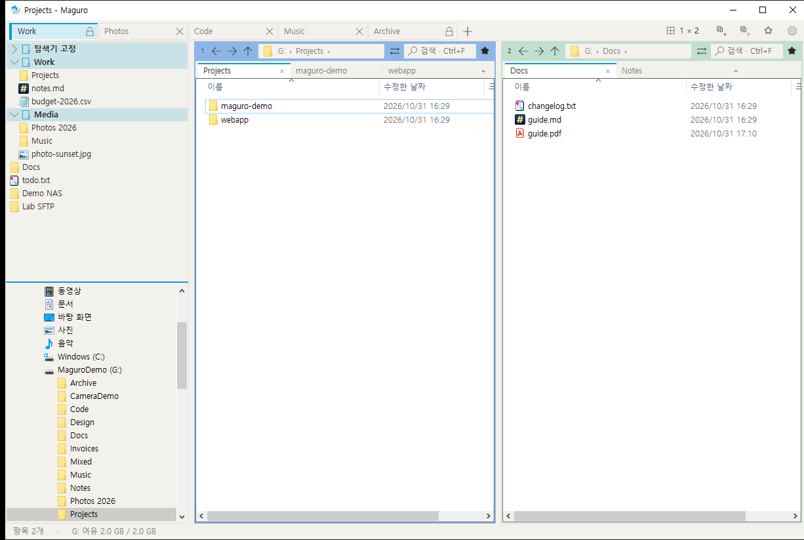
탭 목록
Ctrl+Shift+L은 이 창의 탭 목록을 열고, 이미 열려 있으면 닫습니다. 탭 줄 오른쪽 끝의 목록 단추도 같습니다. 탭 우클릭 메뉴의 탭 목록…은 목록을 열거나, 이미 열려 있으면 그곳으로 포커스를 옮깁니다. Esc나 닫기는 목록을 닫습니다.
한 줄이 창 탭 하나입니다. 열은 탭 이름, 배치(예를 들어 2×2, 열이 다르면 2 | 3), 패널 수, 그리고 패널마다의 폴더 칩입니다. 현재 탭에는 세룰리언 막대가 있습니다. 잠긴 탭은 잠금이 표시됩니다.
필터는 대소문자를 구분하지 않고 탭 이름, 폴더의 표시 이름, 전체 경로와 맞춥니다. 안내 문구는 “탭 이름·폴더로 필터”입니다. 폴더 칩 위에 마우스를 올리면 칩 아래 도구 설명에 전체 경로가 나옵니다. 내 PC는 셸 식별자가 아니라 현지화된 내 PC 이름을 씁니다.
F2는 선택한 탭의 이름을 그 자리에서 바꿉니다. Enter는 새 이름을 유지합니다. Esc는 취소합니다. 텍스트를 그대로 두면 자동 폴더 이름을 고정하지 않습니다. 빈 이름이나 숫자만 있는 이름은 사용자 지정 제목을 지워서, 탭이 다시 폴더를 따릅니다. 사용자 지정 이름은 80자까지 유지됩니다.
Enter, 이동 단추, 또는 두 번 클릭은 그 탭으로 전환하고 목록을 닫습니다. 필터 칸에 포커스가 있고 비어 있지 않으면 Del이 필터를 지웁니다. 그렇지 않으면, 그 탭을 닫을 수 있을 때 Del이 선택한 탭을 닫습니다.
바닥글은 탭 수를 세고 다음을 알려 줍니다. Enter는 이동, F2는 이름 바꾸기, Del은 탭 닫기, Esc는 창 닫기입니다.
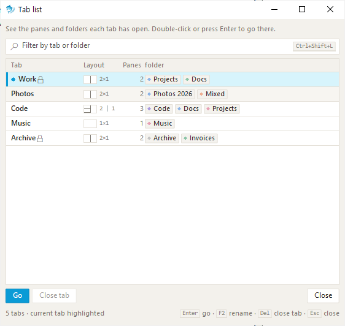
패널 탭
키는 단축키에 한 번만 적습니다.
패널 탭은 한 패널 안의 추가 폴더입니다. 창 탭이 아닙니다. 폴더가 하나면 줄은 숨겨져 있습니다. ⇄ 옆의 단추가 패널 탭을 추가합니다.
가운데 클릭이나 작은 닫기 표시가 패널 탭을 닫습니다. Ctrl+Alt+T, Ctrl+Alt+W, Ctrl+Alt+Page Down, Ctrl+Alt+Page Up은 패널 탭을 만들고, 닫고, 패널 탭 사이를 이동합니다. 이 네 가지는 포커스가 패널에 있을 때만 동작하므로 창 탭 단축키를 빼앗지 않습니다.
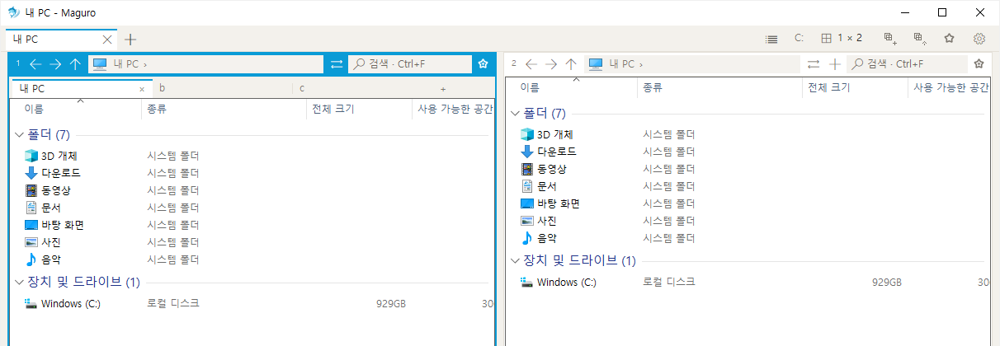
패널 색
패널 머리글을 우클릭하면 색 라벨을 지정합니다. 라벨은 세션과 함께 저장되며 창 탭의 색과는 별개입니다.
견본 여섯 가지는 하늘, 그레이, 라벤더, 세이지, 피치, 로즈입니다. 라이트와 다크는 각기 자신의 색조가 있습니다. 이것은 패널 라벨이며 창의 강조 색이 아닙니다. 강조 색의 기본은 세룰리언 #0A9BD6이며, 설정 → 모양에서 지정합니다.
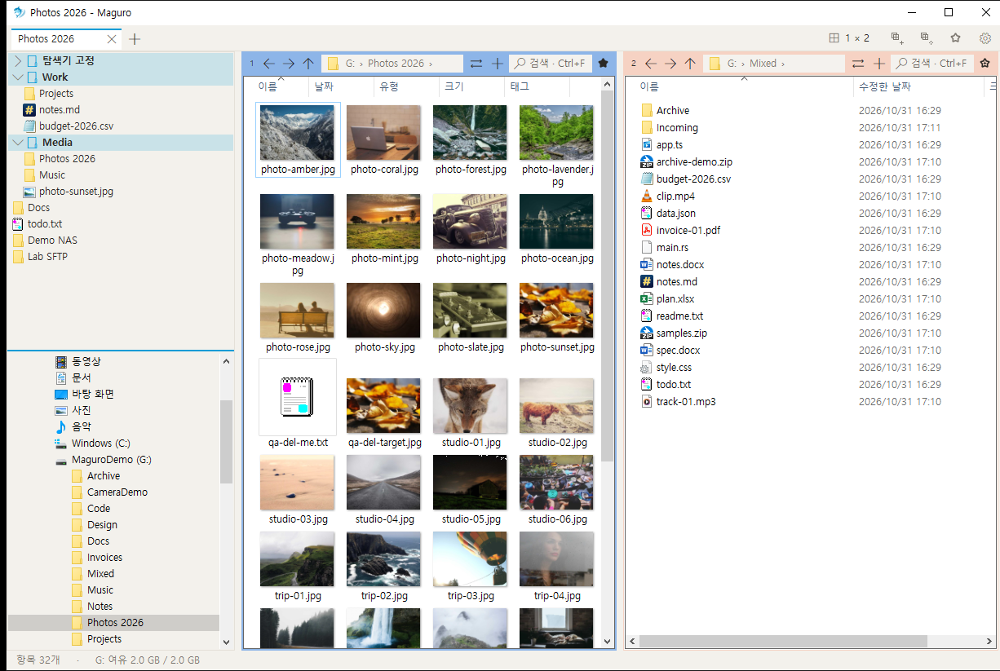
즐겨찾기와 폴더 트리
키는 단축키에 한 번만 적습니다.
즐겨찾기와 폴더 트리는 왼쪽 패널을 같이 씁니다. 둘 사이의 구분선을 끕니다. 설정 → 패널·보기에서 어느 쪽이 위인지 고릅니다. 기본은 즐겨찾기가 위입니다. Ctrl+Shift+E는 패널 전체를 보이거나 숨깁니다.
즐겨찾기는 폴더와 파일을 담으며, 그룹은 중첩할 수 있습니다. 탐색기의 빠른 액세스 고정과 탐색기 즐겨찾기 파일도 패널에 나올 수 있습니다. 즐겨찾기를 누르면 활성 패널에서 열립니다. 그룹을 누르면 펼치거나 접습니다. 검색은 부모 그룹을 남겨, 일치하는 항목이 어디 있는지 보여 줍니다. 파일이나 폴더를 패널에 놓으면 고정됩니다. 끌어서 순서를 바꿉니다.
없는 폴더는 빈 경로로 열리지 않습니다. Maguro는 즐겨찾기에서 제거하거나 위치를 바꿀 것을 제안합니다.
Ctrl+B는 빠른 즐겨찾기 목록을 엽니다. 검색, 이름 바꾸기, 삭제, 활성 패널에서 열기가 있습니다. 패널의 별은 그 패널의 폴더를 추가하거나 제거합니다.
우클릭 메뉴에는 Maguro 즐겨찾기에 추가 또는 Maguro 즐겨찾기에서 제거 줄이 따로 있습니다. 그 줄은 Maguro의 것입니다. 탐색기의 즐겨찾기 명령이 아니며, 우클릭 메뉴 설정 페이지는 그 줄을 숨기지 않습니다.
폴더 트리에서 Enter나 두 번 클릭은 그 폴더를 패널에서 엽니다. Ctrl+클릭이나 가운데 클릭은 패널 탭으로 엽니다.

검색
Ctrl+F는 입력하는 대로 이 폴더를 거릅니다.
하위 폴더를 켜면 깊은 검색이 됩니다. 검색에 Everything 사용이 켜져 있고(기본값) voidtools Everything이 실행 중이면 Maguro가 Everything에 묻습니다. 그렇지 않으면 디스크를 훑습니다. 목록은 최대 300건입니다. 정렬은 maguro.json에 기억됩니다.
설정 → 일반은 Everything이 설치되어 실행 중인지 보여 주고, 시작하거나 winget으로 설치할 수 있습니다. Everything이 설치되지 않은 상태에서 처음 하위 폴더 검색을 하면 한 번 묻습니다.
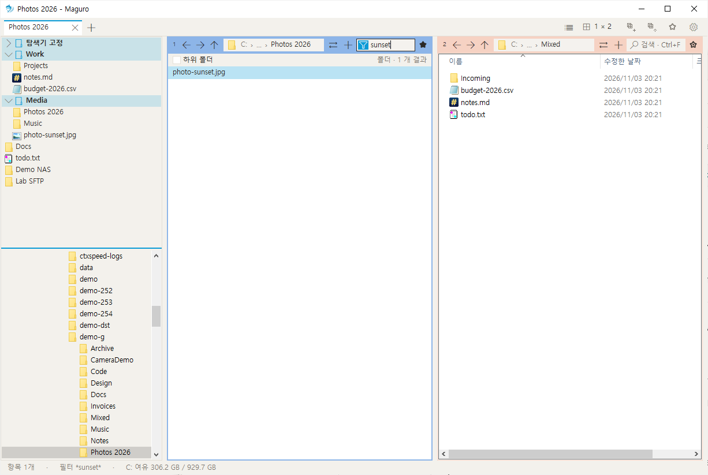
미리보기와 빠른 미리보기
키는 단축키에 한 번만 적습니다.
F3는 빠른 미리보기를 엽니다. 스페이스로 미리보기가 켜져 있으면(기본값) 스페이스도 같습니다. 이름을 입력한 뒤 1초 안의 스페이스나, 한글 또는 일본어 IME로 조합 중인 스페이스는 그 이름의 일부로 남습니다. Ctrl+Space와 Shift+Space는 그대로 둡니다.
빠른 미리보기는 그림(일반적인 카메라 RAW 포함), 동영상 썸네일, 오디오를 보여 주는 카드, PDF 페이지, Markdown, 일반 텍스트, 코드, CSV와 TSV 표, ZIP 내용 목록, HWP, HWPX, HWPT를 보여 줍니다. Office, HTML, Outlook 메일, 글꼴, PDF는 파일이 10 MB 이하일 때 Windows 미리보기 처리기도 쓸 수 있습니다. 탐색기와 같은 방식입니다. 그보다 큰 같은 종류의 파일은 기다리지 않고 카드를 보여 줍니다. 그릴 수 없는 것은 사실을 적은 짧은 카드가 되며, 아이콘만 나오지는 않습니다.
빠른 미리보기에서 Enter는 파일을 기본 앱으로 열고 미리보기를 닫습니다. Shift+Enter나 우클릭은 다른 앱으로 열기를 사용합니다. Esc, 스페이스, F3는 창을 닫습니다. F2는 미리 보는 파일의 이름을 바꿉니다. Del은 그 파일을 삭제합니다. Ctrl+휠은 10%에서 800%까지 확대하거나 축소합니다. 끌면 화면을 옮깁니다. 휠은 긴 페이지를 스크롤합니다. 왼쪽과 오른쪽은 항상 이전 파일이나 다음 파일로 넘어갑니다. 위와 아래는 스크롤하고, 페이지 끝에서 새로 누르면 다른 파일로 넘어갑니다. 휠이 다음 파일로 넘어가는 것은 설정 → 패널·보기 → 휠로 다음/이전 파일로 넘기기가 켜져 있을 때뿐입니다. 이 옵션은 기본으로 꺼져 있습니다.
Alt+P는 오른쪽 미리보기 창을 보이거나 숨깁니다. 활성 패널에서 포커스된 파일을 보여 주며, Windows 미리보기 처리기가 있으면 그것으로 그리고, 없으면 썸네일이나 짧은 안내입니다. 이름 있는 .maguro 파일은 이 창이 열려 있는지를 바꾸지 않습니다. 구분선을 두 번 클릭하면 기본 너비로 돌아갑니다.
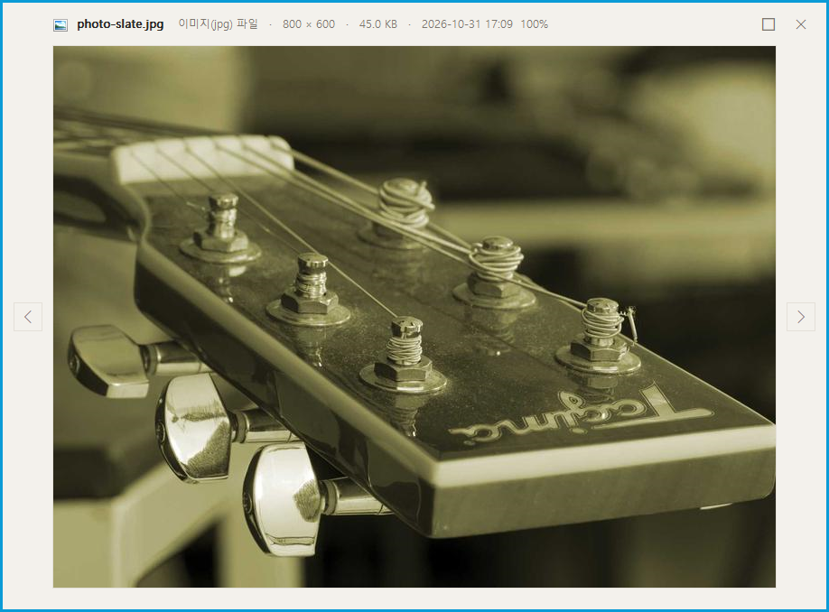
파일 작업
키는 단축키에 한 번만 적습니다.
복사, 잘라내기, 붙여넣기, 이름 바꾸기(F2), 삭제는 탐색기를 따릅니다. F5는 포커스가 어디에 있든 활성 패널을 다시 읽고, 실패한 네트워크 폴더를 다시 시도합니다. Ctrl+Shift+C는 전체 경로를 복사합니다.
붙여넣기와 끌기는 IFileOperation을 사용합니다. Windows 복사 엔진입니다. Windows 진행 창, 실행 취소, 익숙한 확인 메시지가 나옵니다. 일반적인 로컬 복사에서는 Maguro가 그 대화 상자를 바꾸지 않습니다.
Del은 Windows 기본을 따르며, 보통 휴지통입니다. Shift+Del은 완전히 삭제합니다. 설정 → 파일 작업에서 Del 전에 확인할지 정할 수 있고, 기본 삭제를 휴지통 또는 완전 삭제로 정할 수 있습니다. 확인은 기본으로 켜져 있습니다.
패널 사이로 끌면 복사하거나 이동합니다. 기본은 Windows 규칙(같은 드라이브 = 이동)입니다. 설정에서 항상 복사, 또는 항상 묻기로 강제할 수 있습니다. 항상 묻기는 복사, 이동, 취소를 보여 줍니다. 폴더 줄 위에 놓으면 파일이 그 안으로 들어갑니다.
고속 복사(설정 → 파일 작업)는 기본으로 꺼져 있습니다. 켜져 있으면, 네트워크 경로를 건드리는 붙여넣기나 끌기(UNC 경로나 rclone 마운트 포함)는 robocopy와 Maguro 자신의 진행 창을 사용하며 취소할 수 있습니다. 우클릭 메뉴의 고속 붙여넣기는 로컬 복사여도 항상 그 경로를 사용하고, 이 설정을 보지 않습니다. 로컬에서 로컬로의 붙여넣기는 고속 붙여넣기를 고르지 않는 한 IFileOperation을 유지합니다. 여기서 robocopy는 대상을 미러링하거나 비우지 않습니다. 이동은 복사한 다음, 모든 단계가 성공한 뒤에만 원본을 삭제합니다.
클립보드에 그림이 있으면 Ctrl+V는 현재 폴더에 PNG를 저장합니다.
Ctrl+Shift+N이나 F7은 폴더를 만듭니다. Ctrl+Alt+N은 텍스트 파일을 만듭니다. 새 파일 이름은 설정에서 옵니다.
Ctrl+Shift+O는 선택한 같은 이름을 다른 패널로 모읍니다.
Ctrl+Alt+C는 활성 패널의 폴더를 다음 패널과 WinMerge로 비교합니다. 톱니바퀴 메뉴와 파일 목록에서는 선택한 파일 둘을 비교하거나, 파일 하나를 다른 패널의 같은 이름과 비교할 수 있습니다. WinMerge 경로는 설정 → 일반에서 지정합니다. 경로가 비어 있으면 자동 감지입니다. 우클릭 메뉴의 WinMerge 항목은 설정 → 우클릭 메뉴 항목에서 켜기 전까지 꺼져 있습니다.
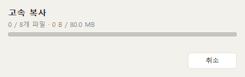
일괄 이름 바꾸기
Ctrl+Shift+R이나 우클릭 메뉴의 일괄 이름 바꾸기는 선택에 대한 일괄 이름 바꾸기 창을 엽니다. 최근 파일 패널에서는 열리지 않습니다. 창 모양은 설정과 같습니다. 평평한 제목 표시줄, 카드, 같은 확인란입니다. 규칙은 왼쪽, 실시간 미리보기는 오른쪽입니다. 규칙 추가는 오른쪽 위, 되돌리기는 왼쪽 아래, 닫기와 이름 바꾸기는 오른쪽 아래에 있습니다.
도구 모음은 대상을 파일, 폴더, 또는 둘 다로 거르고, 확장자 목록으로도 거릅니다. 폴더는 확장자 목록을 무시합니다. 프리셋은 %APPDATA%\Maguro\rename-presets에서 불러오고 저장합니다. maguro.json에는 저장되지 않습니다.
규칙은 위에서 아래로 실행됩니다. 규칙마다 확인란이 있고, 위나 아래로 옮길 수 있습니다. 종류는 다음과 같습니다.
바꾸기 — 찾기와 바꾸기입니다. 대소문자 구분과 확장자 포함은 선택할 수 있습니다. 접두사와 접미사 — 확장자가 아니라 이름(확장자 제외)에 붙습니다. 대소문자 — 소문자, 대문자, 단어 첫 글자, 문장입니다. 확장자를 포함할 수도 있습니다. 확장자 — 새 확장자입니다. 폴더는 이 규칙을 건너뜁니다. 번호 — 시작 값, 간격, 0 채우기, 위치(이름 앞, 이름 뒤, 또는 글자 위치)입니다. 번호는 일괄 안에서의 항목 순서를 따르며, 건너뛴 줄은 세지 않습니다. 날짜 — 수정한 시각, 만든 시각, 연 시각이며, 연·월·일·시·분·초 패턴을 씁니다. 접두사, 접미사, 또는 이름(확장자 제외) 대체로 둡니다. EXIF는 읽지 않습니다. 삽입, 삭제, 다듬기 — 글자 편집입니다. 다듬기가 비어 있으면 공백을 제거합니다. 정규식 — Rust 정규식입니다. $1은 첫 번째 캡처입니다. 빈 패턴은 아무것도 하지 않습니다. 잘못된 패턴은 그 줄에 보고됩니다.
미리보기는 현재 이름, 새 이름, 바뀐 구간을 보여 줍니다. 걸러진 항목은 그대로 보이며 제외로 표시됩니다. 적용할 수 없는 줄은 첫 문제를 다음 순서로 보여 줍니다. 빈 이름, 사용할 수 없는 문자, 예약된 이름, 끝의 공백이나 점, 너무 긴 이름, 일괄 안의 중복 이름, 이미 있는 이름, 잘못된 패턴입니다.
이름 바꾸기는 이름이 바뀌었고 문제가 없는 줄만 적용합니다. 이름 바꾸기 자체는 실행 취소가 되는 IFileOperation을 통합니다. 나중 단계가 실패하면 그 일괄에서 먼저 끝난 단계는 되돌려집니다. Maguro는 rename-undo.json에 최대 20개 일괄의 되돌리기 기록도 따로 둡니다. 되돌리기 단추와 Ctrl+Z는 마지막 일괄을 되돌리고, 더 이상 없는 파일은 건너뜁니다. 이름 바꾸기가 성공하면 규칙 목록이 빈 바꾸기 규칙 하나로 초기화될 수 있습니다.
이 창과 설정의 드롭다운은 스타일이 적용된 콤보 상자입니다. 설명은 테마와 스타일 컨트롤에 있습니다.
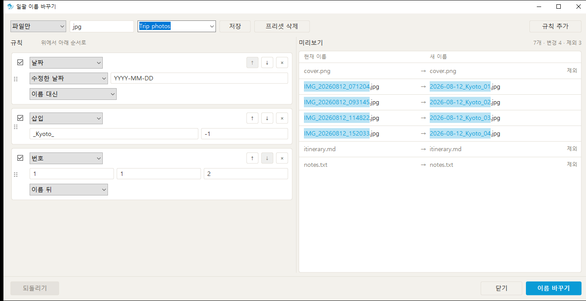
파일 바구니
Ctrl+Shift+B는 파일 바구니를 켜고 끕니다. 항상 위에 있는 작은 창입니다. 파일이나 폴더를 그 위에 놓거나, Ctrl+Alt+B로 활성 선택을 담습니다. 목록은 사본이 아니라 경로를 저장합니다. 경로는 .maguro 세션이 아니라 maguro.json에 있습니다. 목록에서 빼도 원본은 그 자리에 남습니다.
활성 패널에 복사와 활성 패널로 이동은 패널 붙여넣기와 같은 엔진인 IFileOperation을 사용합니다. 활성 패널로 보내기는 복사하지 않습니다. 그 항목의 폴더를 활성 패널에서 엽니다. 파일은 부모 폴더를 열고, 폴더는 자기 자신을 엽니다. 바구니 밖으로 끌면 복사됩니다. Shift를 누른 채 끌면 이동합니다. 제거와 비우기는 목록만 바꿉니다.
없는 원본은 제거할 때까지 원본 없음으로 목록에 남습니다. 복사와 이동은 없는 항목을 건너뜁니다.
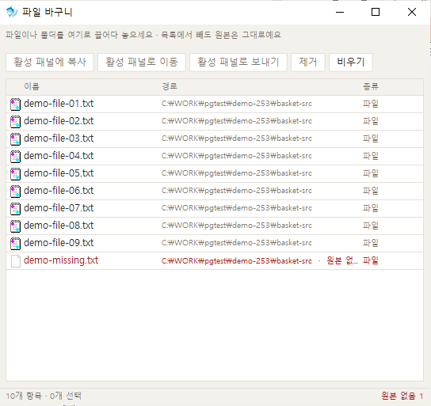
폴더 감시
Ctrl+Shift+W는 폴더 감시를 엽니다. 폴더를 추가하거나, 파일을 추가하거나, 활성 패널을 추가합니다. 폴더 줄은 하위 폴더를 포함할 수 있습니다. 각 줄은 설정과 같은 확인란을 사용합니다.
무언가가 바뀌면 Maguro가 알리며, 그것은 Maguro가 실행 중일 때만입니다. 트레이 아이콘도 없고, 백그라운드 서비스도 없습니다. 목록은 maguro.json에 저장됩니다. 폴더와 파일을 합쳐서 최대 32개까지 감시할 수 있습니다. 감시 중인 파일이 사라지면 그 줄을 삭제할 때까지 없음으로 목록에 남습니다. 이미 감시 중인 폴더나 이미 감시 중인 파일은 두 번 추가되지 않습니다.
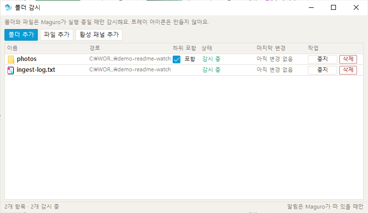
클립보드 경로
Maguro가 실행 중이면 Win+Shift+V가 다른 창이 앞에 있어도 클립보드 경로를 새 탭으로 엽니다. 폴더는 그 탭이 됩니다. 파일은 부모 폴더를 열고 그 파일을 선택합니다. 이름 바꾸기는 시작하지 않습니다.
복사한 파일(CF_HDROP)이 일반 텍스트보다 우선합니다. 텍스트는 앞뒤를 다듬고, 따옴표를 제거하고, file: URL을 받아들이고, 환경 변수를 확장하며, 첫 줄만 사용합니다. 클립보드에 폴더나 파일이 없으면 Maguro가 그렇게 알립니다. 경로가 없으면 없다고 알립니다.
이 단축키는 기본으로 켜져 있습니다. 설정 → 일반에서 끄면 등록이 해제됩니다. 설정 → 단축키에서 키 조합을 바꿀 수 있습니다. 다른 앱의 파일 대화 상자가 앞에 있으면, 탭을 열지 않고 그 대화 상자로 단축키를 넘깁니다.
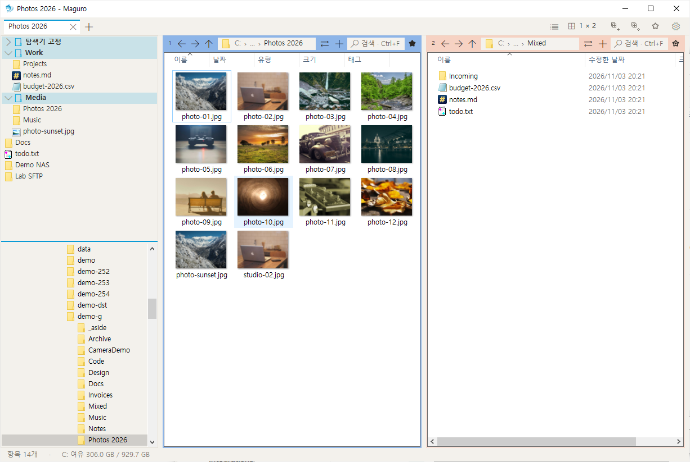
작업 공간
작업 공간은 이름 있는 레이아웃을 최대 아홉 개 저장합니다. 슬롯마다 이름과 .maguro 스냅샷이 있습니다. 탭, 패널, 폴더입니다. 슬롯은 별도 파일이 아니라 maguro.json에 있습니다. 이 키 조합은 전역 단축키가 아닙니다.
Ctrl+Alt+1부터 9는 슬롯을 불러옵니다. Ctrl+Alt+Shift+1부터 9는 현재 레이아웃을 그 슬롯에 저장합니다. 톱니바퀴 메뉴 → 작업 공간에서 슬롯을 저장하고, 불러오고, 이름을 바꾸고, 지울 수 있습니다. 빈 슬롯은 짧은 메시지를 보여 줍니다. 불러오면 현재 탭이 바뀝니다. 먼저 묻는 것은 불러오기 전에 확인이 켜져 있을 때뿐입니다.
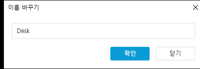
서버 연결
즐겨찾기 패널이나 그룹을 우클릭하고 서버 연결 추가…를 고릅니다. SMB, WebDAV, SFTP, FTP가 열고, 복사하고, 미리 볼 수 있는 폴더로 나타납니다.
종류를 고른 뒤 표시 이름, 주소, 포트, 원격 경로, 사용자, 암호를 입력합니다. 암호는 Windows 자격 증명 관리자에 들어가며, maguro.json에는 절대 기록되지 않습니다.
SMB는 Windows 공유를 사용합니다. WebDAV에는 HTTPS가 필요할 수 있습니다. FTP는 입력한 호스트와 포트를 사용합니다. SFTP와 FTP는 rclone과 WinFsp로 마운트된 뒤 다른 폴더처럼 탐색합니다. 미리보기, 우클릭 메뉴, 고속 복사를 포함합니다. 그런 종류의 연결을 추가할 때 Maguro가 rclone과 WinFsp 설치를 물을 수 있습니다.
끝나면 연결을 끊습니다. 끊긴 공유는 네트워크 폴더 크기가 켜져 있지 않으면 폴더 크기 계산을 건너뜁니다. 네트워크 폴더가 열리지 않으면 F5를 누릅니다.
Office 파일
읽기 모드로 열기는 선택한 항목이 모두 .xls, .xlsx, .xlsm, .csv일 때 나타납니다. .xlsb, 폴더, 또는 섞인 선택에는 나타나지 않습니다. Maguro는 그 경로로 excel.exe /r을 실행하므로, Excel은 통합 문서를 읽기 전용으로 열고 다른 사람은 계속 저장할 수 있습니다.
A1·100%로 정리는 선택한 항목이 모두 .xlsx 또는 .xlsm일 때 나타납니다. 대화 상자는 세션 동안 기억되는 네 가지를 제공합니다. 선택을 A1로 이동, 확대/축소 100%, 첫 시트 선택, .bak.xlsx 백업입니다. 다른 프로그램이 연 파일은 건너뛰며, 잠긴 복사와 같은 방식으로 보고되고, 요약은 완료된 수와 건너뛴 수를 셉니다.
Office 파일의 미리보기는 별개입니다. 설명은 미리보기와 빠른 미리보기에 있습니다.
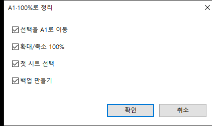
테마와 스타일 컨트롤
설정 → 모양은 테마, 강조 색, 도구 모음, 드라이브 버튼, 상태 표시줄을 정합니다. 테마는 Windows 설정 따르기, 라이트, 다크입니다. 라이트와 다크는 강조 색을 따로 기억합니다. 둘 다 기본 강조 색은 세룰리언 #0A9BD6입니다. 견본 여섯 가지와 직접 지정…이 있습니다. 은퇴한 민트 강조 색 #2EC4A6이 남아 있는 예전 설정 파일은 다음에 읽을 때 세룰리언으로 옮겨집니다. 민트는 선택지가 아닙니다.
테마를 바꾼 뒤, 폴더 목록은 다음에 Maguro를 시작할 때 새 색을 받습니다. 창의 나머지는 바로 갱신됩니다.
설정과 일괄 이름 바꾸기의 모든 드롭다운은 스타일이 적용된 콤보입니다. 그래도 기본 콤보 상자이므로, F4, Alt+Down, 글자를 입력해 고르기, 마우스 휠은 원래대로 동작합니다. 닫힌 모습은 옆의 텍스트 칸과 같습니다. 카드 채움, 가는 테두리, 약간 둥근 모서리, 채워진 삼각형입니다. 라이트 테마에서 사용할 수 있는 화살표는 #444444이라 흰 면 위에서 읽힙니다. 다크 테마의 화살표는 테마 글자색을 씁니다. 포커스, 마우스 올림, 열린 목록은 그 테두리를 세룰리언으로 그립니다. 목록에서 선택된 줄은 세룰리언 바탕에 흰 글자입니다. 사용할 수 없는 콤보와, 꺼진 이름 바꾸기 규칙은 흐린 글자색을 사용합니다.
이 도움말 사이트는 라이트뿐입니다. 앱 테마를 따르지 않습니다.
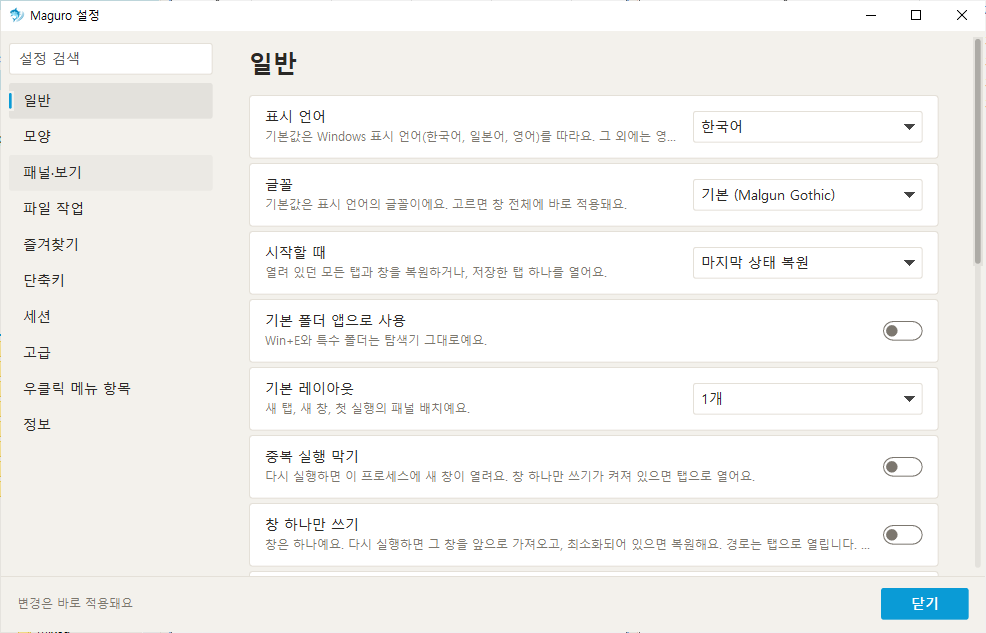
설정
Ctrl+,는 설정을 엽니다. 검색 상자는 제목이나 설명이 맞는 페이지, 카드, 단축키로 이동합니다. 변경은 바로 적용됩니다. 파일은 %APPDATA%\Maguro\maguro.json이며, exe 옆에 portable.txt가 있으면 exe 옆의 maguro.json입니다. 파일이 없으면 기본값에서 시작합니다. 쓰기에 실패하면 5초 뒤에 다시 시도합니다. 읽을 수 없는 파일은 그대로 둡니다. 모르는 키는 유지합니다. 키 설명은 docs/settings.md에 있습니다.
일반. 표시 언어(자동은 언어 파일이 맞으면 Windows를 따르고, 아니면 영어입니다). 글꼴은 창 전체에 적용됩니다. 글꼴 크기는 없습니다. 시작할 때: 마지막 상태 복원, 저장한 세션 하나 열기, 또는 기본 레이아웃. 기본 폴더 앱으로 사용은 Maguro를 파일 시스템 폴더와 드라이브에만 등록합니다. Win+E, 작업 표시줄, shell: 같은 가상 폴더는 탐색기에 남습니다. 기본 레이아웃. 단일 인스턴스. 단일 창 모드. 열기/저장 대화 상자의 폴더. 클립보드 경로 단축키. 빈 곳 더블클릭으로 상위 폴더. Everything. WinMerge 경로.
모양. 테마, 강조 색, 도구 모음, 드라이브 버튼, 상태 표시줄.
패널·보기. 새 패널의 기본 보기. 폴더마다 보기 기억은 설정 파일 옆의 folder-views.json에 정렬, 열, 보기 방식, 아이콘 크기, 그룹을 저장합니다. 모든 폴더의 기본 보기는 활성 패널에서 가져오며, 이 폴더의 보기 지우기와 모두 지우기가 있습니다. 새 패널의 시작 폴더는 내 PC, 바탕 화면, 또는 고른 폴더입니다. 숨김 파일. 파일 확장명은 Windows 자신의 설정이며 탐색기가 쓰는 것과 같습니다. 폴더 크기와, 기본으로 꺼져 있는 네트워크 폴더 옵션. 왼쪽 패널, 그리고 즐겨찾기와 트리 중 위쪽. 활성 패널 테두리. 미리보기 창. 스페이스로 미리보기. 휠로 다음/이전 파일로 넘기기.
파일 작업. 일반적인 붙여넣기는 항상 Windows 복사 창을 사용합니다. 네트워크 폴더 고속 복사. 삭제할 때 확인. 기본 삭제 방식. 새 파일 이름. 끌어 놓기 기본 동작은 Windows 규칙, 항상 복사, 또는 항상 묻기입니다.
즐겨찾기. 그룹, 폴더, 파일의 트리입니다.
단축키. 행을 두 번 클릭하거나 변경을 누른 뒤, 새 단축키를 누릅니다. Esc는 취소합니다. 겹치면 맞바꿀 수 있습니다. 초기화는 그 행을 되돌립니다. 바꾼 키 조합은 다시 시작하지 않고 다음 키부터 적용됩니다. 기본과 다른 키 조합만 저장됩니다.
세션. 세션 폴더, 종료할 때 자동 저장(기본은 꺼짐), 저장되지 않음을 나타내는 초록 점(기본은 켜짐).
고급. 시작할 때 GitHub에서 새 릴리스를 확인합니다. 업데이터는 maguro.exe와 maguro.exe.sha256만 받습니다. zip만 있는 릴리스는 풀지 않습니다. 설정 파일 위치, Maguro JSON 또는 Maguro ini의 내보내기와 가져오기가 있습니다. 모든 설정 초기화는 환경설정을 되돌립니다. 레이아웃, 폴더, 즐겨찾기는 남습니다. 막을 셸 확장 DLL 이름도 있습니다.
우클릭 메뉴 항목. 타사 처리기, 메뉴 모양, 패키지 명령, WinMerge입니다. 설명은 우클릭 메뉴에 있습니다.
정보. 버전, 그리고 출처: Maguro는 efww의 efww/grids 포크입니다.
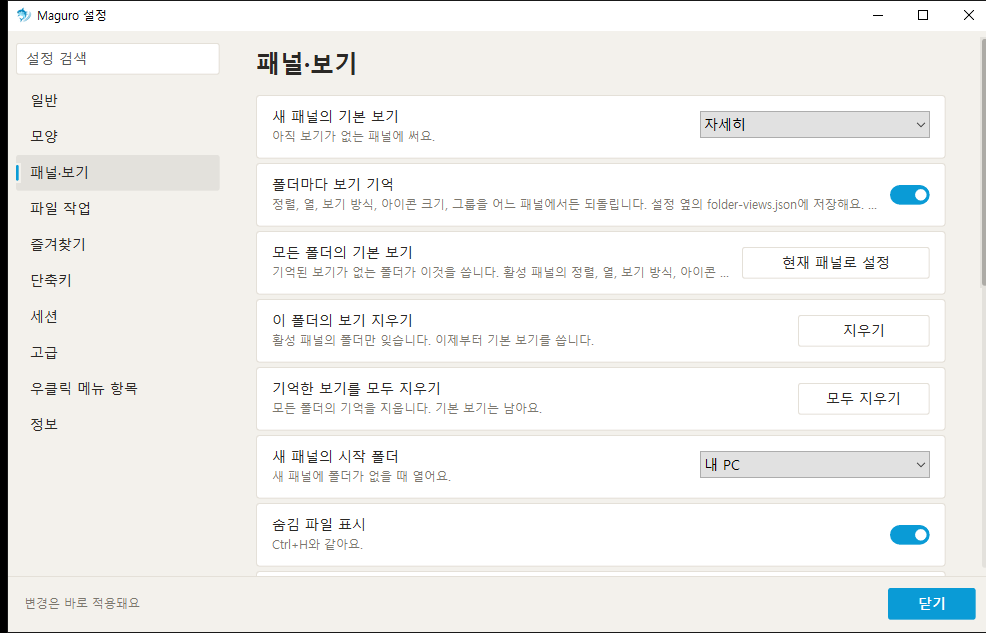
Win+Shift+E와 그 밖의 동작
키는 단축키에 한 번만 적습니다.
Win+Shift+E는 단축키 설정이 켜져 있으면(기본값) Maguro가 실행 중인 동안 전역으로 동작합니다. Maguro를 앞으로 가져오고 파일 목록에 포커스를 둡니다. Maguro 대화 상자가 소유자 창을 비활성화해 두었으면, 그 대화 상자가 대신 앞으로 옵니다. Maguro가 이미 앞에 있을 때 다시 누르면, 단일 창 모드가 켜져 있으면 새 탭이 열리고, 꺼져 있으면 Maguro가 최소화됩니다. 이 키 조합은 「기본 폴더 앱으로 사용」이 아니며, Ctrl+Shift+E도 아닙니다. Ctrl+Shift+E는 왼쪽 패널을 보이거나 숨길 뿐이고, Maguro에 포커스가 있을 때만 동작합니다. Win+E는 탐색기 그대로입니다.
Ctrl+Alt+G는 다른 앱의 열기 또는 저장 대화 상자로 폴더를 옮깁니다. 이 키 조합은 그런 대화 상자(#32770)가 앞에 있고 설정이 켜져 있을 때만 등록됩니다. Maguro에 열린 폴더를 나열하고, 고른 폴더로 대화 상자를 옮깁니다. 가상 폴더는 빠집니다. Win+Shift+E는 그대로입니다.
F6과 Shift+F6은 포커스를 옮깁니다. Ctrl+H는 숨김 파일 표시를 켜거나 끕니다. Num+ 또는 Ctrl+Shift+A는 패턴으로 선택합니다. Num−는 패턴으로 선택을 해제합니다. Num*는 선택을 반전합니다. Alt+Left, Alt+Right, Alt+Up은 뒤로, 앞으로, 상위 폴더입니다. Alt+Down은 최근 폴더를 엽니다. Ctrl+Alt+R은 최근 파일을 최신 항목부터 엽니다. Ctrl+Enter는 선택한 최근 파일을 그 폴더에서 보여 주며, 최근 파일 패널에서만 그렇게 합니다. 다른 곳에서는 그 키가 그대로 전달됩니다.
단축키
다음은 기본값입니다. 설정 → 단축키에서 바꿀 수 있습니다. 앱 안의 목록(Ctrl+/)은 다시 시작하지 않고 변경을 바로 따릅니다. 이 페이지는 0.2.3에 들어 있는 기본값을 적습니다.
Win+Shift+E와 Win+Shift+V는 Maguro가 실행 중인 동안 계속 등록되어 있습니다. Ctrl+Alt+G는 다른 앱의 열기 또는 저장 대화 상자가 앞에 있을 때만 등록됩니다. 작업 공간의 키 조합은 전역이 아닙니다. 패널 탭의 키 조합은 포커스가 패널에 있을 때만 동작합니다.
| 키 | 동작 |
|---|---|
| 탭 | |
| Ctrl+T | 새 탭 |
| Ctrl+W | 탭 닫기 |
| Ctrl+Tab | 다음 탭 |
| Ctrl+Shift+Tab | 이전 탭 |
| Ctrl+Shift+T | 닫은 탭 다시 열기 |
| Ctrl+Alt+K | 탭 복제 |
| Ctrl+Shift+L | 탭 목록 |
| 패널 | |
| Ctrl+Page Down | 다음 패널 |
| Ctrl+Page Up | 이전 패널 |
| Ctrl+1…9 | 1–9번 패널로 이동 |
| 패널 탭 | |
| Ctrl+Alt+T | 새 패널 탭 |
| Ctrl+Alt+W | 패널 탭 닫기 |
| Ctrl+Alt+Page Down | 다음 패널 탭 |
| Ctrl+Alt+Page Up | 이전 패널 탭 |
| 이동 | |
| Alt+Shift+← | 왼쪽 패널 |
| Alt+Shift+→ | 오른쪽 패널 |
| Alt+Shift+↑ | 위 패널 |
| Alt+Shift+↓ | 아래 패널 |
| Ctrl+Alt+Shift+← | 왼쪽 패널과 자리 바꾸기 |
| Ctrl+Alt+Shift+→ | 오른쪽 패널과 자리 바꾸기 |
| Ctrl+Alt+Shift+↑ | 위 패널과 자리 바꾸기 |
| Ctrl+Alt+Shift+↓ | 아래 패널과 자리 바꾸기 |
| Alt+← | 뒤로 |
| Alt+→ | 앞으로 |
| Alt+↑ | 상위 폴더 |
| Alt+↓ | 최근 폴더 |
| Ctrl+L / Alt+D / F4 | 주소창 |
| 보기 | |
| Ctrl+F | 이 폴더 검색 |
| F3 | 빠른 미리보기 |
| Alt+P | 미리보기 창 |
| F6 | 다음 포커스 |
| Shift+F6 | 이전 포커스 |
| Ctrl+H | 숨김 파일 표시 |
| Ctrl+Shift+E | 왼쪽 패널 표시 |
| Ctrl+Shift+O | 탐색기 폴더 가져오기 |
| Ctrl+Alt+R | 최근 파일 |
| Ctrl+Shift+M | 패널 크게 보기 / 복원 |
| 파일 | |
| Ctrl+Shift+C | 전체 경로 복사 |
| Ctrl+Shift+R | 일괄 이름 바꾸기 |
| Num+ / Ctrl+Shift+A | 패턴으로 선택 |
| Num− | 패턴으로 선택 해제 |
| Num* | 선택 반전 |
| Ctrl+Alt+N | 새 텍스트 문서 |
| Ctrl+Shift+N | 새 폴더 |
| F7 | 이 패널에 새 폴더 |
| Ctrl+Alt+C | WinMerge로 폴더 비교 |
| Ctrl+Shift+B | 파일 바구니 |
| Ctrl+Alt+B | 선택을 바구니에 담기 |
| Ctrl+Enter | 폴더에서 표시 (최근 파일에서만) |
| 세션 | |
| Ctrl+S | 이 탭 저장 |
| 작업 공간 | |
| Ctrl+Alt+1…9 | 작업 공간 불러오기 |
| Ctrl+Alt+Shift+1…9 | 작업 공간 저장 |
| 즐겨찾기 | |
| Ctrl+B | 즐겨찾기 |
| 도움말 | |
| Ctrl+, | 설정 |
| F1 | 브라우저에서 이 도움말 열기 |
| Ctrl+/ | 단축키 목록 |
| 창 | |
| Win+Shift+E | Maguro를 앞으로 |
| Ctrl+Alt+G | 파일 대화 상자의 폴더로 이동 |
| Win+Shift+V | 클립보드 경로 열기 |
| Ctrl+N | 새 창 |
| Ctrl+Shift+W | 폴더 감시 |
Maguro가 다시 지정하지 않는 탐색기 키는 F2 이름 바꾸기, Del과 Shift+Del, Ctrl+C, Ctrl+X, Ctrl+V, F5 새로고침입니다.
마우스: 레이아웃 단추, 주소창의 갈매기, 구분선 두 번 클릭, 색을 지정하는 패널 머리글 우클릭, 닫는 패널 탭 가운데 클릭, 자리를 바꾸거나 Ctrl과 함께 복제하는 패널 번호 끌기.
언어
영어는 프로그램에 컴파일되어 있으며, 다른 번역이 없을 때 쓰입니다. 한국어, 일본어, 프랑스어, 독일어는 lang/lang.ko.ini, lang/lang.ja.ini, lang/lang.fr.ini, lang/lang.de.ini로 함께 제공됩니다. 처음 실행할 때, 그리고 버전이 바뀔 때마다, Maguro는 그 네 파일을 설정 파일 옆의 lang 폴더에 씁니다. 그 네 파일은 항상 덮어씁니다. lang.xx.user.ini나 직접 추가한 다른 lang.xx.ini는 쓰지도, 덮어쓰지도, 삭제하지도 않습니다.
파일은 UTF-8입니다. 앞의 BOM은 무시합니다. 줄은 key = text입니다. [meta] name은 언어 목록에 나오는 이름입니다. [meta] font는 선택 사항인 UI 글꼴입니다. 없는 키는 영어 텍스트를 사용합니다. lang.xx.user.ini는 그 위에 로드되며 우선합니다.
자동은 맞는 파일이 있으면 Windows 표시 언어를 따르고, 없으면 영어입니다. 각 패널 안의 탐색기 부분, 예를 들어 열 이름과 셸 자신의 우클릭 항목은 Windows 표시 언어를 따릅니다. 글꼴의 기본은 그 언어의 서체입니다. 한국어는 Malgun Gothic, 일본어는 Yu Gothic UI, 그 외는 Segoe UI입니다. 파일에 서체가 적혀 있으면 그 서체를 씁니다. 고른 서체는 창 전체에 한 번에 적용됩니다.
문제 해결
폴더가 열리지 않습니다. 그 패널을 누르고 F5를 누릅니다. F5는 활성 패널을 다시 읽고, 실패한 네트워크 폴더를 다시 시도합니다.
하위 폴더 검색이 아무것도 찾지 못합니다. Everything을 설치하고 시작한 뒤 설정 → 일반을 확인합니다. Everything이 없으면 Maguro는 디스크를 훑으며, 그것도 하위 폴더를 켠 뒤에만 합니다.
네트워크 복사가 느리거나, Maguro의 진행 창이 나올 것으로 예상한 경우입니다. 네트워크 폴더 고속 복사를 켜거나 고속 붙여넣기를 사용합니다. 꺼져 있으면 Windows 복사 창을 사용합니다. 순전히 로컬인 복사에는, 고속 붙여넣기를 고르지 않는 한 고속 복사가 실행되지 않습니다.
WinMerge가 시작되지 않습니다. 설정 → 일반에서 경로를 지정합니다. 폴더 비교에는 실제 폴더가 필요합니다. 우클릭의 WinMerge 명령은 켜기 전까지 숨겨져 있습니다.
SFTP가 실패합니다. 물으면 rclone과 WinFsp를 설치하고, 호스트, 포트, 사용자, 암호를 확인합니다. WebDAV에는 HTTPS가 필요할 수 있습니다. SMB는 Windows 공유를 사용합니다. FTP는 연결에 적힌 호스트와 포트를 사용합니다.
창 테마는 바뀌었는데 폴더 목록은 바뀌지 않았습니다. Maguro를 다시 시작합니다. 목록은 시작할 때 테마를 받습니다.
지난번에 Maguro가 예기치 않게 종료되었습니다. 다음 시작은 보고서가 기록된 곳, 곧 설정 파일 옆의 crashes 폴더를 보여 주고, 그 폴더 열기를 제안합니다. 보고서에는 버전, 스레드, 예외, 오류가 난 모듈, 마지막 폴더, 불러온 셸 확장 DLL이 들어 있습니다.
두 번째 실행이 아무 일도 하지 않는 것처럼 보입니다. 단일 인스턴스나 단일 창 모드가 켜져 있어, 첫 창이 남고 경로는 탭으로 도착합니다. 설치할 수 있는 업데이트는 maguro.exe를 바꾼 뒤 다시 시작합니다. zip만 있는 릴리스는 풀지 않습니다. 업데이트 창이 그렇게 말하면 exe를 직접 바꿉니다.
Maguro를 관리자 권한으로 실행하지 않습니다. PowerToys Mouse Crosshairs 같은 도구는 상승된 창 위의 커서를 따라가지 못합니다(UIPI). Maguro는 일반 권한으로 실행하거나, 둘 다 관리자 권한으로 실행합니다.
exe에 코드 서명이 없어 처음 실행할 때 SmartScreen이 경고합니다. 추가 정보 → 실행을 고릅니다.
예전 .grids, .qdr, grids.ini는 열리지 않습니다. 현재 창에서 새 .maguro 세션을 저장합니다.